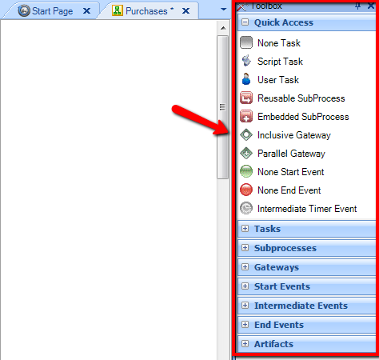

Let's define a simple business process that will show you how the modeler works. It is a purchase process where an employee enters a purchase order, and the order is authorized by the employee’s supervisor. When the order is approved, the purchase order is automatically generated. Next, you will see a step by step procedure for modeling this business process.
|
1. To start modeling business processes, you must create a new Knowledge Base. To do that, press the Create Knowledge Base button as shown in the following image:
You have to define a name for it, such as Internal Processes.
|
|
2. Once the knowledge base has been created, you have to create a new diagram to start modeling your process. To do this, right-click on the Objects option and then select New - Object, as shown on the image.
Tip: you can also use the shortcut CTRL+N.
|
|
3. In the following dialogue, select the Business Process Diagram type and assign a name to it, which in this case is Purchases.
The purchasing process to be modeled is described as follows:
a. An employee enters an order.
b. The request is authorized by the employee’s supervisor.
c. If the request is authorized, the corresponding purchase order is generated automatically.
|
|
4. To start modeling the process, you have a toolbar as shown in the following image:

Start modeling your process, which has three activities, as shown in the image. To do that, drag three None Task symbols to the diagram.

|
|
5. Modify the descriptions of tasks by pressing F2 on each of them, and then assign the following descriptions:
a. Enter order
b. Authorize Purchase Order
c. Generate Purchase Order
|
|
6. Add the connectors between tasks to specify the sequence order and include the process start and end.
Tip: To add descriptions to the symbols, press F2 after selecting the symbol.
|
|
7. So far it has not been considered that the order may not be authorized. So you need to do an assessment following the authorization task, and so you have to use the Exclusive Gateway symbol.
|
|
8. And last, you have to define the type of task for each of those three. There are two types: User and Script. User type tasks are those that require an interaction with the user. And Script type tasks are those that are automatically executed. In this case, for the order entry and authorization task, the user interaction is naturally necessary. However, the task that generates the order does not call for the interaction since the process specifies that it is automatically generated.
To modify the type, located on the task, you must press F4 for the properties dialogue to open up and allow you to do the type change.
|
|
The purchase process you modeled will look like this in the end:
|
|
Once the process is completed, you can export it to the development team, who will be in charge of making it automatic. To do that you can use the Knowledge Manager – Export option and then select the directory where the file will be
|
| Note: If the project is implemented or already in production and you want to make any changes to the processes, read Getting Started: Modifying a business process. |
|